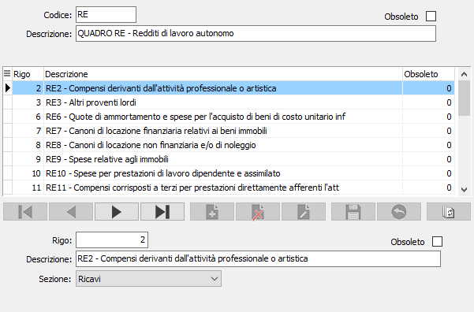

Voci prospetto redditi
La nuova tabella è funzionale alla realizzazione del “Prospetto dei redditi” e riporta sostanzialmente i “gruppi” di voci definiti dall’amministrazione finanziaria. E’ previsto un gruppo di voci per le contabilità professionisti ed un diverso gruppo di voci per le contabilità semplificate. L’utente è tenuto alla verifica e all’eventuale modifica delle voci in caso di nuove disposizioni dell’Amministrazione Finanziaria. Adeguati elementi della tabella vengono inseriti sia nel piano dei conti che nei mastri per consentire la riclassificazione richiesta dal prospetto. Le aziende in regime di contabilità semplificata inseriranno i codici del quadro RG; le aziende in regime di contabilità professionisti inseriranno i codici del quadro RE.

CODICE: codice alfanumerico che identifica il quadro del prospetto del reddito. Sul campo sono attive le funzioni di ricerca
DESCRIZIONE: campo alfanumerico per descrivere la denominazione del quadro.
OBSOLETO: flag attivabile dall’utente per inibire il possibile utilizzo dell’elemento di tabella in esame nelle successive transazioni.
RIGO: campo numerico correlato al codice del quadro, per indicare il rigo del Prospetto del reddito del reddito. Sul campo è attiva la ricerca sulla tabella stessa.
DESCRIZIONE: campo alfanumerico per descrivere la denominazione del rigo.
SEZIONE: indica la definizione della voce relativa al rigo all'interno del prospetto del reddito: ricavi, costi o ritenute d'acconto.
OBSOLETO: flag attivabile dall’utente per inibire il possibile utilizzo dell’elemento di tabella in esame nelle successive transazioni.